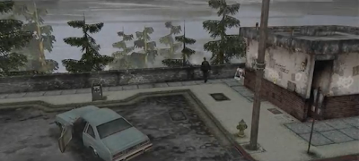
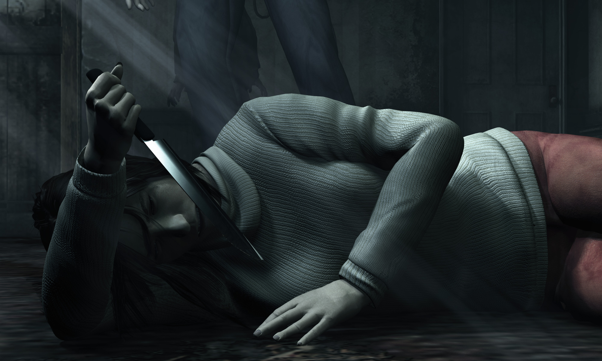
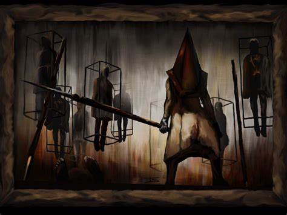
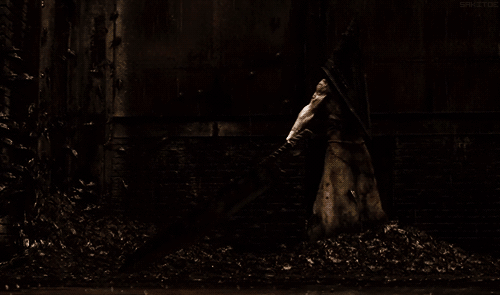

Silent Hill 2
Silent Hill 2 sigue a James Sunderland, el cual llega a Silent Hill después de recibir una misteriosa carta de su esposa, Mary, quien falleció de una enfermedad hace tres años. La carta dice que ella lo espera en su «lugar especial», aunque James no tiene idea de lo que esto pueda significar. Mientras James explora Silent Hill, se encuentra con otros que también tienen búsquedas en el pueblo: Angela Orosco, a quien James encuentra al inicio del juego, ha llegado buscando a su madre y le advierte a James que el pueblo es peligroso. Apenas llega a las calles principales, James encuentra un Silent Hill diferente al lugar turístico que recordaba; el pueblo está abandonado y cubierto de niebla. Siguiendo un rastro de sangre, James encuentra una radio rota que emite estática; mientras la examina una extraña criatura antropomorfa lo ataca, lo que lo fuerza a improvisar un arma. Tras derrotarla, la contempla y decide conservar la radio. Así comenzando su aventura por el pueblo de Silent Hill.

Desde su infancia difícil y destruida, Angela estaba convencida de que nunca sería feliz. Su padre, Thomas Orosco, un leñador alcohólico, había violado y abusado sexualmente de ella cuando era niña, causándole mucha hostilidad hacia los demás hombres. Otros abusos que Thomas Orosco le había causado a Angela involucraron abuso físico, pues Thomas solía golpearla mientras estaba ebrio. Además de Thomas, es probable que el hermano de Angela también pudiera haber abusado de ella. Mientras tanto, la madre de Angela le recordaba frecuentemente a ella que merecía esos abusos (por ser una mujer seductora) y Angela los soportó a medida que crecía. A pesar de que la madre de Angela sabía todo lo que estaba ocurriendo, nunca intervino. Sin embargo, como consecuencia de esto, el dolor interno de Angela y el sufrimiento que padeció habían influido en sus pensamientos de suicidio.
En un punto desconocido de su vida, la madre de Angela dejó a su familia, dejando a Angela sola con su padre y su hermano. Después de que Angela se graduó en la secundaria, ella huyó de casa, pero fue encontrada y llevada de nuevo por su padre. Luego de esto, mató a su padre y a su hermano a puñaladas, y después de entrar en un estado de confusión emocional tras el doble crimen, fue llamada a Silent Hill para encontrar a su madre desaparecida

Pyramid Head, también conocido como Red Pyramid Thing, es un monstruo que aparece como el principal antagonista del videojuego Silent Hill 2 y también se encuentra en Silent Hill: Homecoming con el nombre de Boogeyman. Este personaje es un monstruo de figura humana que siempre lleva un enorme casco piramidal sobre su cabeza. Es representado como un castigador o verdugo, es sumamente cruel, violento y suele asesinar a aquellas personas que son devoradas por la culpa y sienten la necesidad de ser castigadas.

En Silent Hill 2 la existencia de Pyramid Head está totalmente ligada al subconsciente de James: la angustia, la ira y el deseo de castigo propio por la muerte de su esposa; todos estos sentimientos son los que provocan que Pyramid Head lo persiga constantemente.

La empresa "Konami"
Konami Holdings Corporation (コナミホールディングス株式会社 Konami Hōrudingusu Kabushiki-gaisha?), o simplemente Konami, es una empresa de desarrollo de juguetes, cartas coleccionables, anime, tokusatsu, máquinas tragaperras y videojuegos. Fue fundada en 1969 como un negocio de reparación y de jukeboxes en Osaka, Japón, por Kagemasa Kozuki, quien es todavía su presidente y director ejecutivo.
El nombre "Konami" es una conjunción de los nombres Kagemasa Kozuki, Yoshinobu Nakama, Hiro Matsuda, y Shokichi Ishihara, quienes fueron los socios de Kozuki y los fundadores originales de Konami Industry Co., Ltd en 1973. Konami también significa «olas pequeñas». Tiene actualmente sus bases en Tokio y adicionalmente opera clubes de salud y ejercicio en Japón.
Konami ha sido el responsable de la creación de 6 de las franquicias más exitosas en la historia de los videojuegos: Castlevania, Contra, Metal Gear Solid, Silent Hill, Dance Dance Revolution (que fue el parte aguas para la creación de este tipo de juegos como Pump It Up de Andamiro) y Pro Evolution Soccer (desde su primer videojuego, International Superstar Soccer), así como ser la creadora de videojuegos exitosos, basados en series, caricaturas y películas, tales son los casos de los videojuegos de las caricaturas Tiny Toon Adventures, Animaniacs y Tortugas Ninja, así como el videojuego Batman Returns, basado en la película homónima, y haber desarrollado el considerado mejor videojuego de arcade de todos los tiempos: The Simpsons Arcade Game. Aunado a eso, también ha sido la creadora de la franquicia de cartas coleccionable de Yu-Gi-Oh!, basados en el popular ánime japonés, logrando un gran éxito (y ser la única que le pudo hacer frente al éxito del también juego de cartas Magic: El encuentro).
Pagina oficial de Konami(Games)